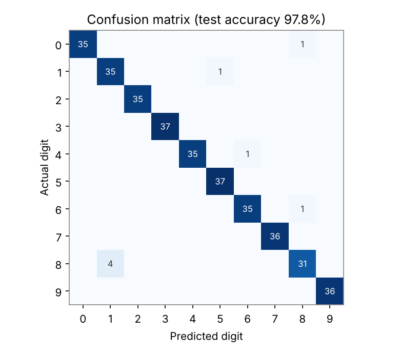
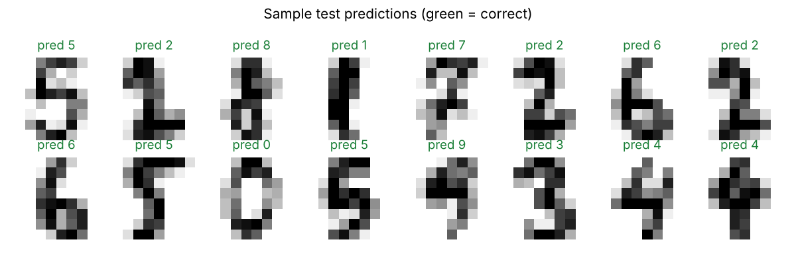

Personal project · Python + JavaScript
Handwritten Digit Recognizer
Draw any digit from 0 to 9 in the box. A small neural network I trained in Python reads it and guesses — live, right here in your browser.
Tip: write your 7 with a line through the middle, and draw big in the centre of the box — that's how the training data was written.
My guess
?
Draw a digit from 0 to 9
What the model sees (8×8)
Confidence for each digit
How it works
- 1
Training in Python
I used scikit-learn's digits dataset — 1,797 handwritten digits, each 8×8 pixels. 80% were used to train a neural network (64 inputs → 64 hidden neurons with ReLU → 10 outputs), and 20% were kept aside to test it.
- 2
Making it forgiving
People rarely draw perfectly centred, so I added copies of every training image shifted by one pixel in each direction (data augmentation). That made the model handle messier drawings.
- 3
Running in the browser
The trained weights are exported to JSON. JavaScript crops your drawing, scales it into the same 8×8 format as the training data, and runs the same maths the model uses in Python — no server needed.


What I learned
- How to split data properly so the accuracy number is honest.
- Why preprocessing matters: the model only works well when browser drawings look like the training data.
- Datasets carry habits: the people who wrote these digits crossed their 7s, so the model struggles with a plain 7. Real-world AI is only as good as the data behind it.
- How a neural network's forward pass actually works — I re-wrote it in JavaScript by hand.
Limitations: the dataset is small and low-resolution (8×8), so very thin, tilted or unusual handwriting can confuse it. A bigger dataset like MNIST and a convolutional network would be the next step.
Code: train.py (Python training) · app.js (browser demo) · model.json (exported weights)